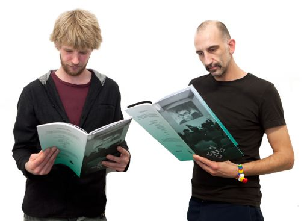
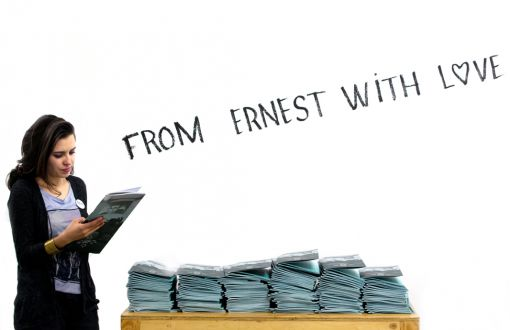
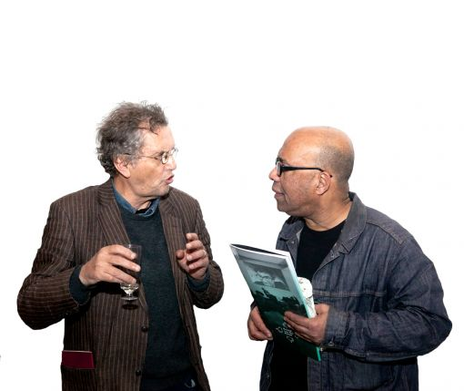

Some impressions from the Lauch of Oproep a publication as part of Tent's State of the Art series, written by Ernest van der Kwast.
The launch was combined with CBK New Years Borrel an event that found place at in the gallery space for a festive start of 2012.
The publication was for at the same time also the launch of our typeface VB Pallograph, which design was inspired by a collection of Rotterdam House numbers.
Fotografie by Aad Hoogendoorn.
This publication presents a collection of texts written and performed by Ernest van der Kwast during the State of the Art debates in 2011.
With each chapter we introduced a second layer of imagery with a central theme revolving around the hand.Within each image there's a double meaning besides the obvious numerical indicator.
This is also the premier of VB Pallograph a typeface we designed inspired by a collection of house numberings located in Rotterdam.
2012 / Tent. / Book / Rotterdam / publication / purchase-font
What is the future for the arts in Rotterdam and what is its worth? TENT, WORM, Rotterdam Art Centre and Theatre Ro have taken an initiative in the form of a debate series titled: State of the Art. State of the Art brings together visions of the future of arts and culture in Rotterdam. This series includes essays,YouTube testimonials and conversations with artists, writers, thinkers and experts about the upcoming budget cuts. What will be the motto for a vital art scene in Rotterdam?
Photography by Aad Hoogendoorn
2011 / educational-institution / Tent. / international / Book / Rotterdam
The Last Supper explores and documents the process of the project itself from the initial concept to the production. This took place in a series of informal conversations on location at five specific sites in The Netherlands between 13.01�31.01.10.
In collaboration with Emilio Macchia.
2010 / non-profit / Book / Rotterdam / self-initiated / timeline
Stay Inside. Close windows and doors. uses the zombie as an ideal character for a role play about life in the modern city. The �Reader� combines this experience with a
collection of theoretical writings, quotes and memories
of such as film critic Jordi Costa, philosopher *Jaime
Cuenca Amigo and the director of the London Showroom Emily Pethick*.
Dimensions: 16.5x23cm
Page count: 96
Design made at Roger Teeuwen Ontwerper's
The package mainly consists of one newspaperprint cut into two different formats. These crops form a starting point and offer a dialogue of different relations between the content.
�Loosely fitting could be a description of this newspaper.�Whether it sounds positive or not, it is a fact. As factual as our surroundings are setup. ... All seemed to be subtle and opinion-less... .�That is the strength of the work of Vanhoe. He�infiltrates the hierarchy of our thinking without being illustrative, carefully carelessness.�
�Reinaart Vanhoe
This publication is a follow up form the exhibition �Maatwerk� which took place in �PAKT�, Amsterdam 2008.�The publication is a�collaboration by Reinaart Vanhoe and Nele Vos. With contributions of Hans Bossmann and komt/nu/voorbij.
2 x 16 pages, text NL/EN, published by Auto i.c.w. Graphic Union Press, price: 2 Euro excl. porto
For online orders within Europe and more detailed information please contact: order@vosbrenner.net
or http://graphicunion.org/mise.php?item=nature-vs-culture
Our Choice, A Plan to Solve the Climate Crisis gathers in one place the most effective solutions that are available now and that, together, will solve this crisis. It is meant to depoliticize the climate crisis as much as possible and inspire readers to take action�not only on an individual basis, but as participants in the political processes.
Dimensions: 19x22.5cm
Page count: 416pages
Designed at MGMT. Design in collaboration with Melcher Media
2009 / New York City / international / Al Gore / Book / sustainability
This proposed exhibition catalog for the Guggenheim in New York documents the take over and transformation of the museum by 10 artists who have claimed exhibition as their medium. Each artist was assigned an icon to track their movements and collaborative involvement over the course of the exhibition.
Dimensions: 15x23.5cm
Page count: 416
Designed at MGMT. Design
This publication series includes three books used by Parsons the New School for Design to reach prospective students at the undergraduate and graduate levels. The covers and interior divider section are compiled of found materials on location from the student ateliers.
Dimensions: 17.8x25.5;cm
Page count: 112
Designed at MGMT. Design
2009 / educational-institution / New York City / Book / student-guide
Charles Rohlfs was an American actor, artist and designer of furniture. Rohlfs is a representative of the Arts and Crafts Movement, and is most famous for his skill as a furniture maker. The Artistic Furniture of Charles Rohlfs is an collection and exhibition catalog produced for the American Decorative Art 1900 Foundation.
Dimensions: 25.5x31cm
Page count: 282 pages
Designed at MGMT. Design
2008 / environmental / New York City / furniture design / Book
This book is based on the idea that innovative and cutting edge architecture does not have to cost a fortune. 18 projects are highlighted from world renowned architects.
Written by Susanna Sirefman and designed for Monacelli Press
Dimensions: 22.5x25.5cm
Page count: 160
Designed at MGMT. Design
The Fonds Catalogue of Veenman Publishers includes 300 books which are showcased in a visual map. Each book entry is accompanied by a picture, description text and linked to a coding system which appears in both the index and the information Graphic. This Graphic (see p.84) is a total overview of published works enabling relationships to be formed through content and disciplines.
Dimensions: 22.5x25.5 cm
Page count: 80
Made in collaboration with Huub de Lang.
This book includes the projects of the advanced studios of:
Gregg Pasquarelli in �Versioning�6.0,� Galia Solomonoff in
�Brooklyn Civic Space,� and Mario Gooden in �Global Topologies.� Interviews with the architects and their studio strategies provide insight into the pedagogical approach of the three practitioner-educators.
Dimensions: 21&29.5cm
Page count: 144pages
Designed at MGMT. Design
2007 / architecture / educational-institution / New York City / Book / urbanism
Exhibition Catalog i.c.w. Reinaart Vanhoe and Roger Teeuwen, August 31 to Sept. 24.
The contemporary city is increasingly covered by advertising and marketing slogans (Rotterdam Dares, I Amsterdam) and decor of festivals which should strengthen its economy and will authenticate identity. Each square meter should be filled by a banner, a logo, a new complex, a ban or an urban program. In all attempts to make the city visible it precisely gets invisible, masked by the abundance of symbols. With Neo�beginners Reinaart Vanhoe is trying to create a radical counterbalance.
Nineteen Rotterdam, Dutch and foreign artists (collectives) react with new and existing work on the mental and physical space of the city. Based on the urban condition of Rotterdam, they create perspectives on the city, in the attempt, and his failure. The catalog incorporates these attempts in Tent. and the urban space of Rotterdam and at the same time it also offers and creates a new place for interventions and reactions.
2007 / Tent. / environmental / non-profit / Book / Rotterdam / photocopy
A series of book cover designs for Querido's classic dutch literature series. Each book is wrapped in an individual envelope which contains all of the titles of the collection. The rotation of these titles gives each book its own cover. The spine works independently of the rotating cover system.
The study guide contains useful information for all ArtEZ students in the form of an agenda. All events are pre-printed in the agenda and on a poster which folds down to an envelope.
The image essay presents the individual characteristics of the schools each working space is represented by a specific room number.
2007 / educational-institution / Book / Arnhem / student-guide / timeline
Wearing Propaganda: Textiles on the Home Front in Japan, Britain, and the United States is a rare look into the fundamental differences between these nations approaches to propaganda during WWII.
Designed at Tsang Seymour Design
This publication for the Cooper-Hewitt National Design Museum showcased sustainable technology designed to help people in impoverished areas of the world. It was published as part of the exhibition.
Dimensions: 21.5x&27.5 cm
Page count: 144
Designed at Tsang Seymour Design
2006 / architecture / environmental / New York City / furniture design / Book / sustainability
Back to top